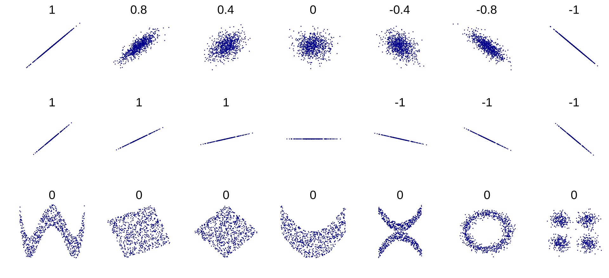

9. Correlation Coefficient
We assume, as usual, a ground truth model \(y = f(x) + \epsilon\) where \(f\) is usually unknown, a (possibly random) sample of points \((x_1, y_1), \cdots, (x_n, y_n)\) and a linear model \(\tilde{y} = ax + b\). In this setting we usually need to know how good the linear model is – how well does if capture the ground truth \(f(x)\)?
One obvious measure is the sum of squared errors, which we minimized last class to derive the linear regression equations.
While this literally captures the error in the model on each point, it is hard to interpret, it scales with the number of points, and is in different units from the given data. We can normalize it to the mean sum of squared errors:
which at least doesn’t scale with the number of points but is in different units. Thus by taking a radical
we get the root mean sum of squared errors. This at least scales with the magnitude of the \(y\) values, so you can interpret it somewhat. It is also similar to a standard deviation, which is familiar to many people. (Note some texts would divide by \(n-2\) instead of \(n\) to create a truly unbiased estimator for the standard deviation, but this simpler version aggrees with other data science presentations, including kaggle.)
9.1. Pearson’s Correlation Coefficient
While variants of SSE have their place, one cannot escape the use of \(r\), the Pearson’s correlation coefficient. Students learn in algebra classes that a linear regression coefficient \(r=1\) is a perfect positive correlation and \(r=-1\) is a perfect negative correlation and \(r=0.5\) is a weak correlation, for example. We will take a more precise approach.
One formular for \(r\) is
Let’s unpack this. \(SS_{reg}\) is the sum of squared-error due to regression and \(SS_{tot}\) is the sum of squared-error total (due to the original data). Here \(\overline{y} = \frac1n\sum_i y_i\) is the mean of the observed \(y_i\) values. \(SS_{tot}\), then, is the variance of the observed \(y_i\) values – it is the sum of the squared deviations of the observations from their mean.
\(SS_{reg}\), on the other hand, is the variance of the predicted \(\tilde{y}_i\) values, relative to the same observed mean.
The ratio of the two is the ratio of the “explained variance” to the “total variance.” There is always variance in the original dataset. If our linear model very closely fits the data, then it will explain most of that original variance. That would correspond to a high \(r^2\) value. On the other hand a low \(r^2\) indicates that there is variance in the data that is not capture by the linear model. Something else is happening to create this data shape.
It can be helpful to think of \(r^2\) as the percent of “explained variance”. You’ll notice this formula is for \(r^2\), not \(r\). Obviously both are \(<1\) but they are not identical. We may see more details of the various ways to interpret \(r\) vs \(r^2\) but honestly for most cases this explanation is quite good enough and better than what most people understand!
9.2. r=0
You may have been taught that \(r=0\) implies no correlation between \(x\) and \(y\) pairs. This is often indicated in math books with an amorphous cloud of points, wandering lonely across the page, enigmatic and unknowable. Actually a number of highly correlated datasets can claim to possess \(r=0\) values as this helpful chart shows[1]

To be correct, \(r=0\) implies no linear correlation between \(x\) and \(y\). If it so happens that every predicted \(\tilde{y}_i\) value is identical to the mean \(\overline{y}\), then \(r^2=0\). Datasets with perfect vertical symmetry can have this property.